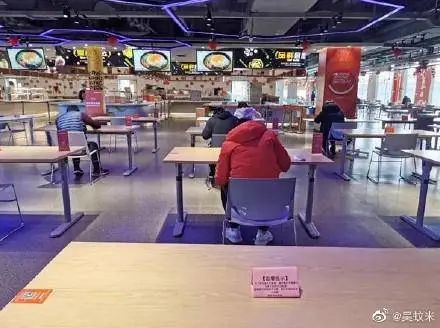
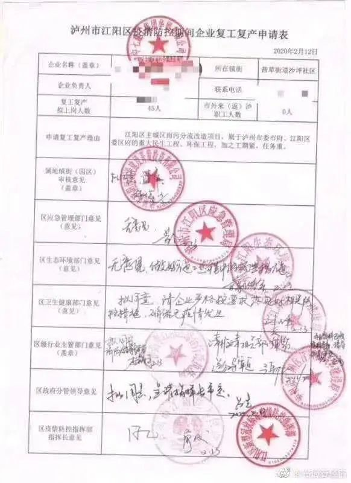
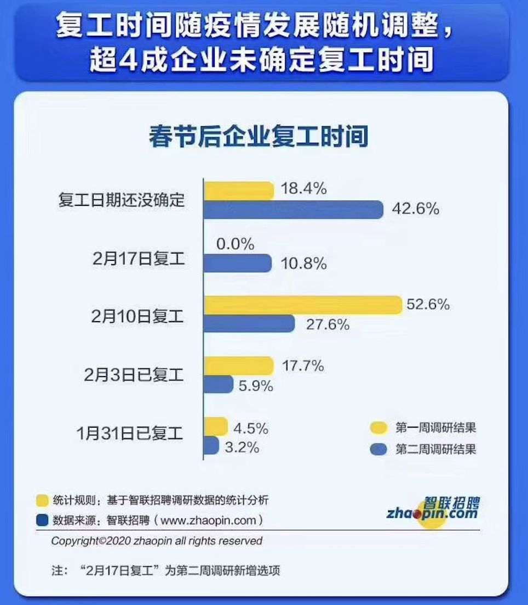

开工了，可我没口罩
原文链接 备份链接 以下文章来源于AI财经社 ，作者AI财经社作者 开工前最忧伤的段子可能是，“今天戴着口罩去买口罩，口罩没买到，还损失了一个口罩。” 2月10日起，部分企业陆续复工，宅在家里即为国家做贡献的使命宣告终结。当下的主要矛 …
燃财经（ID:rancaijing）原创
作者 | 孟亚娜
编辑 | 凌远川
坐电梯像“吃火锅”，吃饭像“参加高考”，红外线测体温，脚踏式按键开门神器……近日，互联网公司的花式复工火了，网友大呼，太硬核了。

图片来源于微博
随着新冠肺炎疫情走势渐好，除湖北疫情严重地区外，全国其他省市的公司近日开始陆续复工，伴随而来的是一场硬核防疫战。为了复工，一些地方采取的方式非常硬核。
2月16日下午5:30，一架飞机从四川广元出发，飞越1700多公里，满载154名返岗员工，抵达杭州萧山机场。据悉，此次包机返岗的所有员工免费乘坐，费用由嘉善县政府承担三分之二，员工所在的企业承担三分之一。
为了促进复工，浙江率先发起一场“抢人大战”，杭州、宁波、嘉兴、金华、台州等地纷纷包车、包专列甚至是包机组织员工有序返程，并给予了企业一定的补助。此外，浙江湖州还发布对新员工补助千元的政策。
随后，福州、云南等地也陆续采取了类似政策，派出大巴和专列，分批次前往各地，接回返岗员工。
伴随着复工潮，物流行业也开始恢复了。2月17日，国家邮政局表示，快递业产能已经恢复4成以上，全国快件揽收量1.12亿件，达到正常业务量的9成，投递量超过8000万件，超过正常业务量的4成。快递小哥近日已复工到岗200万人。
而两个月没理发的朋友们也迎来了好消息，美发行业陆续开始营业了。2月19日，北京29家美发店已经达到防疫要求，并陆续开始营业，Tony老师归来了。
迟来的企业复工战全面打响。
***迫在眉睫的复工***
疫情期间，为了做好防疫，全国各地各村落采取了封村封路的防护措施，而这一举措对于农业经济来说无疑是一记重击。春节期间，时逢春耕需要大量人工，但受制于疫情影响，很难找到人帮忙。在各地封村封路的影响下，很多在其他村落租用土地的种植户生产资料无法运输，农事工作无法开展。
疫情发生以来，多数菜农和果农在网络呼救求助。各地交通的封锁，直接导致大量水果和蔬菜销量受阻。老家在湖北天门市某小镇的张雷告诉燃财经，因为封路家里种的菜现在都没位置卖，都快烂在地里了。

图为受访者提供
疫情之下，也导致了一起悲剧的发生。辛苦一年的劳作，却没办法将劳动成果变现。一位被困在云南的养蜂人刘师傅，一时想不开上吊自杀了。受疫情影响，刘师傅养的蜜蜂不能顺利转场，最后蜜蜂中毒了，十分令人痛惜。
然而，为了有效控制疫情的蔓延，不少省份规定2月9日之前企业不得复工，这对一些急需复工赚钱养家还贷的普通人，无疑是雪上加霜。
图片来源于微博
不仅普通人的生活受到了影响，企业也多数陷入困境。大量线下商业机构关停，制造、餐饮、影视、教育等行业都受到了波及。餐饮届的明星项目西贝，公开表示资金链面临着断裂的风险，老牌KTV品牌K歌之王，则不堪重负濒临破产。多数涉及到预收费的教育机构同样面临着现金流的挑战，IT教育老牌机构兄弟连日前宣布破产、K12素质教育培训机构明兮大语文资金链断裂，近日突然关门倒闭。
全国范围内线下门店关停，多数大牌企业也难逃一劫，耐克和阿迪达斯关闭了近一半门店，麦当劳在全国范围内关闭了300家分店，星巴克关闭了2000多家中国分店。近日，一则调查数据显示，多数中小企业目前账上的现金流，已经不足以支撑熬过两个月。
据了解，中小企业在我国创造了2/3的生产总值、80%的城镇就业和50%以上的税收，如果这部分企业经营受到影响，将直接影响到整体经济的发展和走势。专家徐赛兰认为，新冠肺炎疫情对中国一季度GDP增速的拖累或高达1%。
在此情形下，企业复工复产迫在眉睫。延迟复工不仅造成了企业在短时间内背负了巨额人工和租金成本，并且由于没有进项，现金流告急。另一方面，停工期间，企业无法正常完成履约，将面临违约赔付和客户流失的风险。
然而，为了有效防控疫情，延迟复工也是必要的。当下政府已经出台一系列减费降税、减免房租和五险一金等政策，帮助企业共渡难关。
***政府助力企业打响复工战***
早在2月5日，商务部已经开始关注企业复工的问题，发布通知称，要组织具备条件的企业尽快复工营业，及时协调解决企业复工营业困难，指导企业切实抓好疫情防控。为促进企业复工，全国范围内接连发布了相关的政策，减税、降租、补贴、延缓企业履约周期等，帮助企业在做好防疫措施的前提下，早日复工复产。
江苏省反应最为速度，2月12日，江苏省率先发布了22条政策措施，从减负、强贷、稳就业等多个方面助力百万中小企业复工。在税收上，对旅客运输、餐饮和住宿等行业的个体工商户和个人独资企业及时办理定额调整申请，对不达起征税的一律免除纳税义务。在人力成本上，对受疫情影响生产经营暂时无力缴纳社保的企业，经批准可以缓缴养老保险等费用，最长可达半年。在资金帮扶上，政策要求银行机构和地方金融从业机构要通过降低利率、推广无还本续贷、增加信用贷款和中长期贷款等方式，支持企业战胜疫情灾害影响，不得盲目断贷、抽贷、压贷。
北上广深等大城市也相继出台相关政策，减免房租、帮助企业稳定现金流等。其中，北京市在税费减免和复工政策方面表现较为全面，2月7日即全面推出非接触式办税流程。广州市的相关政策则比较有针对性，2月17日，广州市白云区宣布，除了负面清单企业外（多为文旅企业），所有企业都可以备案复工，只需要“一表一书”（企业复工备案表+企业疫情防控承诺书）。另外，深圳市的相关政策，对于企业减负扶持力度大，减租辐射范围较广。近日，深圳多地推行“先复工再审查”的政策，企业达到复工标准，可自行组织复工复产，无需等待核准或批准，政府后续再组织上门核查。
图片来源于微博
相比之下，浙江、四川省的促复工政策则更为硬核，二省联手发起了“抢人大战”，联手包巴士、高铁、飞机接员工集体就业。此外，浙江省杭州市宣布了简化复工程序，企业可以通过线上或线下方式，将复工方案、复工员工防疫承诺书等报备后，自行复工，不需要再备案审核通过，并要求省、市重点工程在2月17日内全面复工。浙江省宁波市在2月17日宣布，取消复工审批，除了负面清单企业外，企业备案、承诺即可立即复工，并鼓励企业多途径扩大招工规模，每家企业最高可获得30万元招工补助。
此外，其他地区也纷纷响应促复工政策，山东省在网上建立了“企业复工复产应急诉求受理窗口”；辽宁省要求国企即刻行动，涉及重大项目、重大工程的企业，尽快复工；江西省卫健委宣布，取消对各类企业复工复产的批准手续，改为报备制。当地企业和项目建设单位只需提前24小时将疫情防控方案向当地报备即可；广西壮族自治区表示，力争在2月底前广西实现50%的规模以上、限额以上服务业企业复产经营，3月底前实现全部复产经营；海南为了促复工，全国首创推出“复工复产综合保险”，财政补贴70%。
2月19日，发改委官宣称，从区域来看，广东、江苏、上海等一些经济大省（市）规模以上的工业企业复工率超过50%；从企业看，大型企业相对中小企业复工复产进度快，上游行业和资本技术密集型企业相对下游行业和劳动密集型企业进度更快；从行业看，涉及疫情防控相关物资的复工复产成效比较明显，比如口罩最近几天的产能一直在100%以上，2月17日的产能利用率达到110%。
在相关政策倾斜下，多数企业开始积极进行复工复产相关申请审核。但是，企业的复工之路没那么顺遂。
*****企业复工的两难*****
在繁琐的申请流程和员工安全保障两大因素牵扯下，企业复工进退维艰。
首先，“复工难、审批多”仍旧是当下企业面临的一大难题，对于不少申请复工的企业而言，如果想要申请复工，则意味着需要填写15个表格、2份承诺书、制定1个应急预案、1个复工方案、1套食堂防护措施和1套宿舍防护措施等共计21份材料。
此前，四川省泸州市一份盖有九个公章的复工复产申请表，在网上引起了热议。后续官方回应，称全程为代办，而且很快就完成了。

图片来自微博
虽然流程上有所简化，但企业仍然面临两难的问题，如果审批相对宽松，虽然复工复产进程也要相对较快，但防疫的安全隐患也增大了，如果审批过于严格，又会拉长企业的复工复产速度。再有就是外地员工返工难的问题。
近日，北京宣布需要在返回工作地之后隔离14天，这一举措影响到很多人按正常日期返工。而除了隔离问题，还有多数员工面临着村落、城市封闭，无法出行的问题。
深圳某精密压铸制品工厂老板，在接受媒体采访时表示，工厂五六十名员工，往年正月初八九就能开工，今年大部分员工回不来，目前仅有几名员工返岗。
在多地封城封村的管控下，员工无法及时返回岗位，多数企业迎来了“用工荒”。其中，劳动密集型的制造业和服务业首当其冲，另外对于一些工业生产、建筑业和房屋装修、家装行业都有影响。
而由于用工荒和各地开工时间不一致，也进一步导致产业链的上下游企业受到了影响，物流运输尚未大幅复苏，原材料运输也是一大难题，这直接致使一些企业无法正常生产，包括一些提前投入生产的医疗制造企业。
为了帮助一些医疗制造企业早日恢复正常运营，配电自动化工程师共享平台工业速派近日携手西门子、施耐德等企业发起了公益活动，通过提供产品备件，现场工程师及远程专家指导服务。
2月17日，工业速派收到一位安徽省六安市金寨县客户的需求，在生产口罩时设备出了问题，速派专员到达现场之后，分析判断了问题，断定是超声波机器出现故障，但在对接各生产厂家询问产品情况之后，发现厂家仍未全部复工，还需等待。工业速派总监董琪告诉燃财经，对于工厂而言，阻碍复工的一大因素是，员工没法回到企业，这直接影响了上下游产业链的运转。
这一矛盾在本次疫情重灾区的武汉表现的更为明显。武汉地区在电子、光电、汽车、医药和钢铁等领域都拥有成规模的产业集群，与武汉关联密切的产业链下游企业可能会面临断供停产的问题。受到此次停工影响，苹果在武汉的多家零部件供应厂商无法开工，官方披露苹果无线耳机AirPods将会延期交货，而同时苹果手机也将减缓出货，每周降低100万台。
其次，即使员工返回了岗位，企业面临的压力也非常大。近日北京一公司在复工后，查出一员工确诊，导致单位几十个人隔离。该返京人员，在年前自驾回老家过年，参加了亲戚朋友多次聚会聚餐。大年初六一家人开车回到北京，而返京后该确诊病例并未按要求隔离14天，初七正常回公司上班。
无独有偶，2月19日，当当网一名员工被确诊新冠肺炎一事闹得沸沸扬扬，据了解，该女员工在其家属被确诊之前，曾与多位同事一起上班吃饭。该女同事确诊之后，当当方面表示，2月18日已安排公司全员在家办公，实时跟踪全体员工的身体状况。
在防疫这场战争中，多数企业如履薄冰，最近某建筑公司复工后员工全方位防护的措施在网上传播开来，几位工程师围着图纸，仿佛是在开武林大会。

图片来源于微博
在复工面前，企业面临重重困难。面对此现状，为保障员工的健康安全，一些互联网企业再次将复工日期延后到三月初。智联招聘近日发布的调研显示，自2月17日复工以来，超四成企业尚未确认复工时间。而目前各公司应对疫情影响，纷纷选择在线办公，各行业中互联网行业选择在家办公的比例占据三分之一。

图片来源于智联招聘相关报告
除了在家办公外，一些企业还采取了卫生保障、风险备案两大措施。比较具有代表性的是近期硬核复工的阿里，一部电梯只允许9个人乘坐，像是在“吃火锅”，在食堂就餐时像“参加高考”，每个人间隔一个桌子的距离，公司内遍布红外线测体温，用脚踏式按键开门神器开门……可谓是做到了全方位无死角防护。此外，钉钉推出了”员工健康”功能和无接触考勤方案，鼓励员工使用手机进行WIFI、GPS或蓝牙打卡，并根据员工每日提交的健康状况反馈和行程跟踪，持续预警。

图片来源于网络
和阿里一样硬核开工的还有一家湖南的食品公司，为做好新冠肺炎疫情防控，湖南一食品公司在员工入厂前，设置了每日防疫考试环节。考试内容包含单选、多选和判断三种题型，员工只有达到90分以上，才可上班。多数网友感叹道，上个班可太难了。
*题图来源于视觉中国。


你所在的企业复工了吗？有哪些措施？
欢迎在评论区留下你的评论，我们会在点赞前三（超过20个）的评论里挑选一位网友，送出爱奇艺视频月卡一张****。原创文章转载请点击公众号菜单“转载合作”。
一手资讯/硬核报告/每日红包/线下活动！就差你了！快加微信rancaijing02回复“读者”一键上车！


燃财经工作室
点个在看吧😘
长按二维码向我转账
点个在看吧😘
受苹果公司新规定影响，微信 iOS 版的赞赏功能被关闭，可通过二维码转账支持公众号。
原文链接 备份链接 以下文章来源于AI财经社 ，作者AI财经社作者 开工前最忧伤的段子可能是，“今天戴着口罩去买口罩，口罩没买到，还损失了一个口罩。” 2月10日起，部分企业陆续复工，宅在家里即为国家做贡献的使命宣告终结。当下的主要矛 …
原文链接 备份链接 人员返岗难、道路不畅通、现金流紧绷，中小物流企业需要更多的支持和帮助，这不仅事关物流业全面复工复产，也关系到民生和社会稳定 文 |《财经》记者 王静仪 编辑 | 施智梁 快递员王为这几天已经忙昏了头，他所在的上海市浦 …
原文链接 备份链接 燃财经（ID:rancaijing）原创 作者 | 苏琦 编辑 | 凌远川 疫情之下，很多创业者发现，人的问题才是眼下最难处理的。 为了帮助创业者看清局面、应对危机，2月21日，燃财经举办“创新经济战疫计划” 第四期 …
原文链接 备份链接 以下文章来源于我是南七道 ，作者南七道 疫情，让老蔡这样的小微型企业措手不及。而开工之路，更是遥不可及 *******文｜ 南七道******* 广东随处可见的小工厂（南七道2019年摄） 受疫情影响，最近包括 …
原文链接 备份链接 一场疫情的突袭，让城市停摆。 街上熙熙攘攘不复存在，过年热闹喜庆的氛围荡然无存，原本早就应该隆隆作响的工厂，不知所措地安静着…… 2月19日下午，浙江省举行新冠肺炎疫情防控工作新闻发布会，会上通报了疫情最新情况，在“五 …